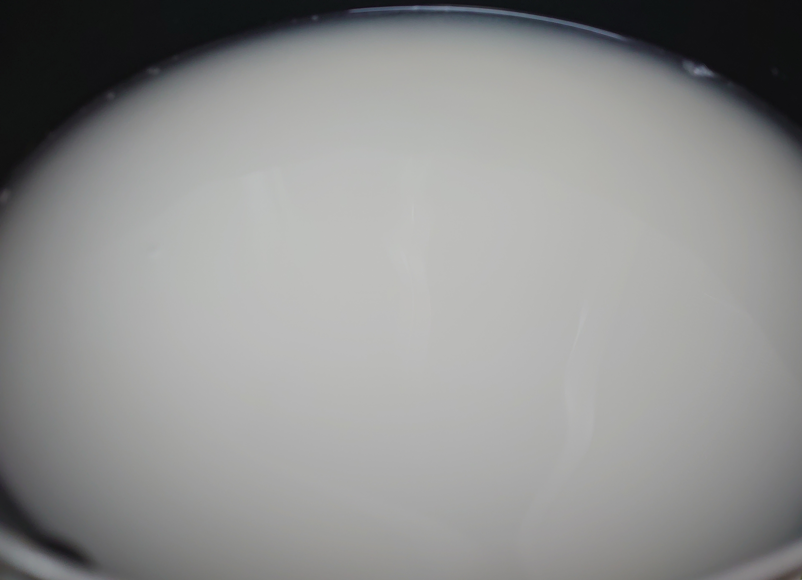

鍋による米の炊き方
概要
- 米の炊き方をメモする.
- 鍋で米を炊く手順は大きく2つ.
- 準備:
- 米を研ぐ.
- 水に浸す.
- 米の1.2倍量の水を入れる.
- 炊く:
- 沸騰まで中火-強火.
- 弱火で煮る(炊く).
- 最後に一瞬中火-強火.
- 蒸す.
- 準備:
目次
背景
- 友人の結婚式の引き出物に米を貰ったが自宅に炊飯器が無い.
- 米を鍋で炊いたが炊き方を忘れそうだったのでメモした.

本記事で触れない内容
- 炊飯器の使用方法
対象読者
- 自分
- 料理ができない人
作業環境
作業環境テーブル
| No. | 項目 | 想定 |
|---|---|---|
| 1 | 炊飯器 | 無し |
| 2 | 鍋 | 有り |
| 3 | 米 | 非無洗米 |
作業環境備考
- 鍋の容量は少なくとも炊きたい米の2.5倍の容量があると良い.
作業手順
準備
鍋を洗う.
鍋に米を入れる.
- 今回使用する米
2-3回米を洗う.
- 以下を2-3回実行).
- 鍋に水を入れる.
- 米同士を擦らせながら混ぜる.
- これを研ぐという.
- 白く濁った水を捨てる.
- 洗っていると水は白く濁る.

- 以下を2-3回実行).
米を水に浸して15-20分待つ.
- 水に浸した米
水を捨てる.
鍋に米の1.2倍の水を入れる.
- 例
- 米: 2合(300g)
- 水: コップ1.8杯 = 360cc(360g)
- 例
米を炊く
- 鍋を中火で温める.
- 沸騰したら弱火に変更する.
- 15分弱火でコトコト煮込みながら待つ.
- 15分後, ほぼ水は蒸発しているはず.
- お焦げが欲しければ一瞬中火or強火にする.
- 火を止める.
- 15分蒸して待つ.
- 完成.
炊いた米
お焦げ
参考文献
- 味の素 「ご飯の炊き方」, ＜https://park.ajinomoto.co.jp/recipe/basic/cookrice/＞ (2021年7月27日閲覧)．
- 全農パールライス株式会社 「お米の炊き方・保管方法」, ＜https://www.zpr.co.jp/fun/iroha/index.html＞ (2021年7月27日閲覧)．
 このページでは, 数式の表現に
MathJax
を利用しています.
このページでは, 数式の表現に
MathJax
を利用しています.
このページでは, シンタックスハイライト(プログラムのコードに色を付ける機能)に Google Code Prettify を利用しています.
更新日: 2021/08/13
Copyright (C) 2020 laplaciannin102 All Rights Reserved.